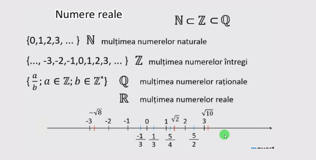
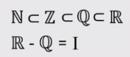

Prima dată să revedem cum am ajuns aici. Cum am ajuns la numerele reale? Iată axa numerelor, prima dată am învățat despre
numerele naturale, 0, 1, 2, 3 și așa mai departe. Această mulțime se notează cu N.
Apoi am învățat despre mulțimea numerelor întregi, care cuprinde și numerele negative, minus 3, minus 2, minus 1, iar axa
numerelor întregi merge atât în stânga cât și în dreapta la infinit. Această mulțime se notează cu Z, deci mulțimea numerelor întregi.
Legătura dintre aceste două mulțimi o mai știți? N este inclus în Z, pentru că mulțimea numerelor întregi cuprinde și mulțimea
numerelor naturale. Deci N este o submulțime a lui Z. Observăm că sunt o infinitate de numere întregi pe axa numerelor dar între
ele sunt goluri, nu avem încă nimic între 1 și 2, între 2 și 3. Dar au apărut apoi fracțiile care umplu acest gol, fracțiile pot fi atât
pozitive cât și negative și ele aparțin mulțimii numerelor raționale. Deci mulțimea numerelor raționale este formată din fracții, de
exemplu a supra b, unde a și b sunt numere întregi, dar b nu are voie să fie 0, observați steluța, mulțimea numerelor raționale se
notează cu litera Q mare și în acest fel am umplut axa. Observați cum între o infinitate de numere, adică mulțimea numerelor întregi
am mai adăugat încă o infinitate de numere, mulțimea numerelor raționale. Apoi între aceste numere care sunt infinit de dense am
mai inserat și alte numere, numerele iraționale, care au fost descoperite ceva mai târziu. Numerele iraționale pot fi atât pozitive cât
și negative și împreună cu mulțimea numerelor raționale am completat axa numerelor. Numerele iraționale sunt și ele infinite, dar
totuși au încăput printre numerele raționale, care și ele sunt infinite și infinit de dense.

Iar toate aceste numere de pe axă se numesc numere reale. În acest moment cunoaștem toate numerele de pe axa numerelor.
De aceea mulțimea numerelor reale se mai numește și continuum, pentru că putem descrie toate punctele de pe o dreapta infinită,
atât la stânga cât și la dreapta, și infinit de densă. De aceea mulțimea numerelor reale cuprinde toate mulțimile învățate până acum.
Deci mulțimea numerelor naturale este inclusă în mulțimea numerelor întregi, amândouă sunt incluse în mulțimea numerelor
raționale, toate 3 sunt incluse în mulțimea numerelor reale. Și gata. Pe această axă nu mai există alte numere. Unde este mulțimea
numerelor iraționale? Mulțimea numerelor iraționale este diferența dintre mulțimea numerelor reale și mulțimea numerelor raționale,
adică ce s-a adăugat ca să avem numerele reale. Deci numerele iraționale sunt numerele reale care nu se pot scrie sub formă de
fracție.

Dacă vedem mulțimea numerelor reale cu o steluță, asta înseamnă că l-am exclus pe 0. R steluță este egal cu R minus
elementul 0. Dacă vedeți R plus, înseamnă că ne referim la numerele reale pozitive, iar dacă vedeți R minus, înseamnă că ne referim
la mulțimea numerelor reale negative, din partea stângă a lui 0. Atât numerele reale pozitive cât și numerele reale negative sunt
infinit de multe.